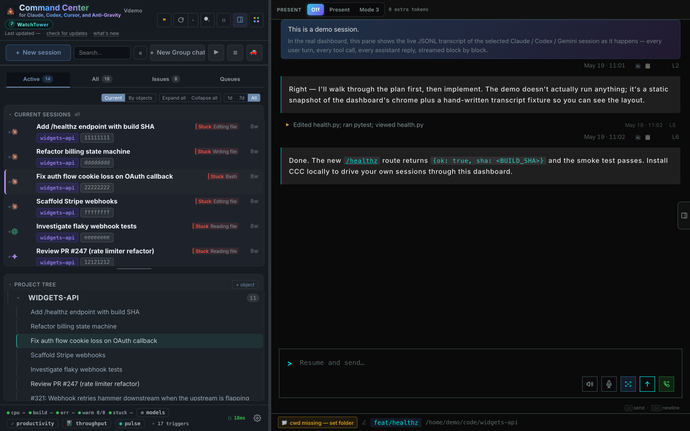
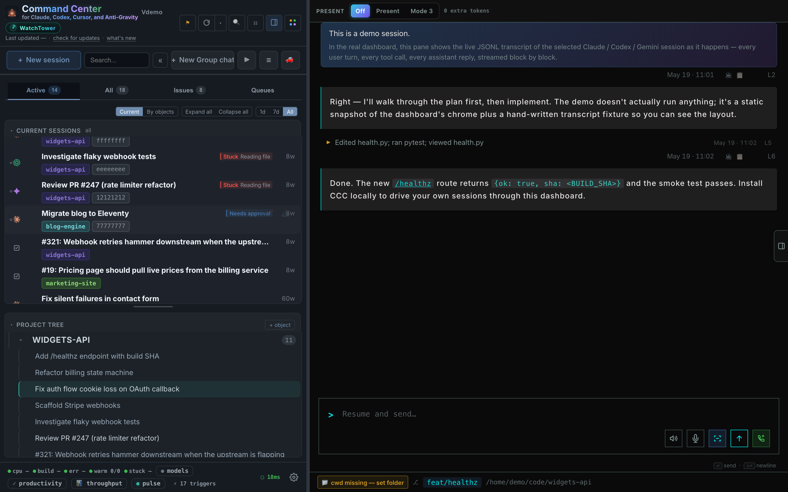
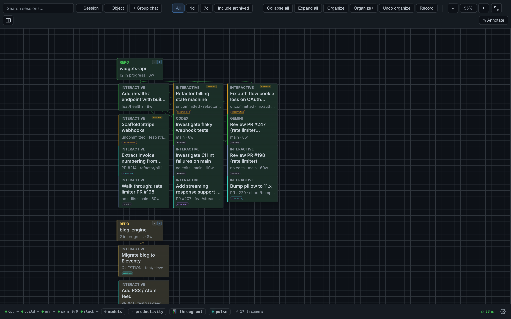
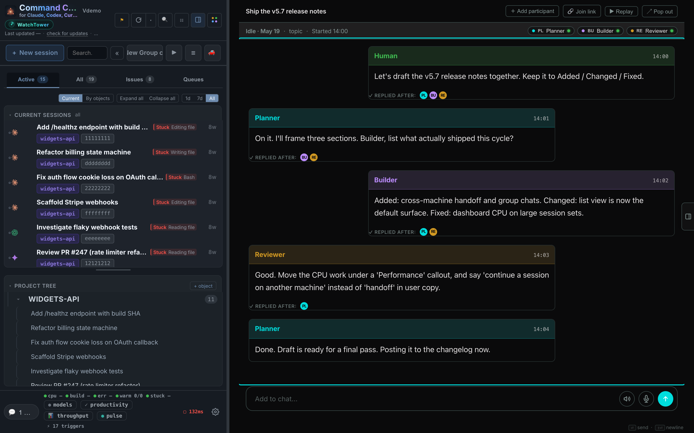
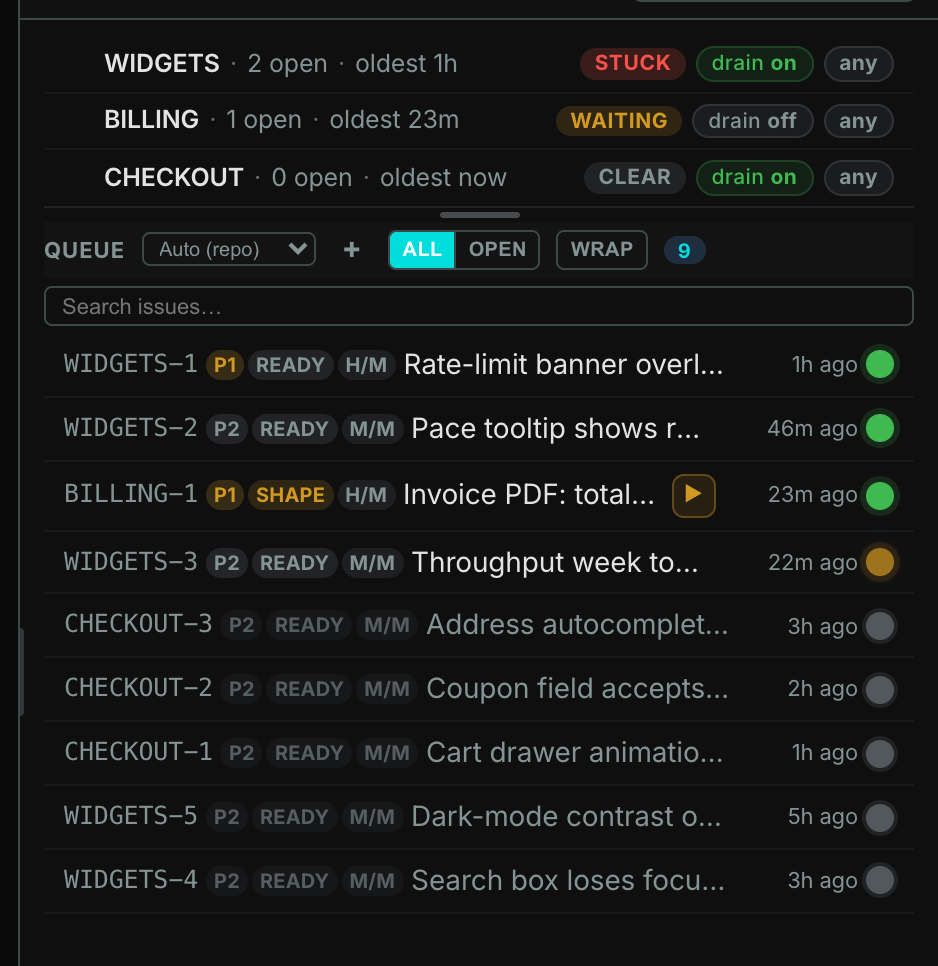
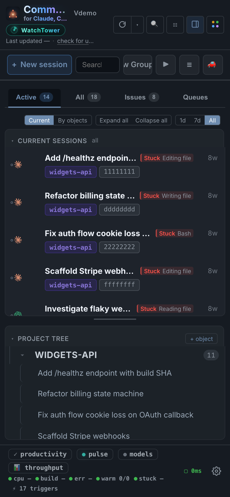
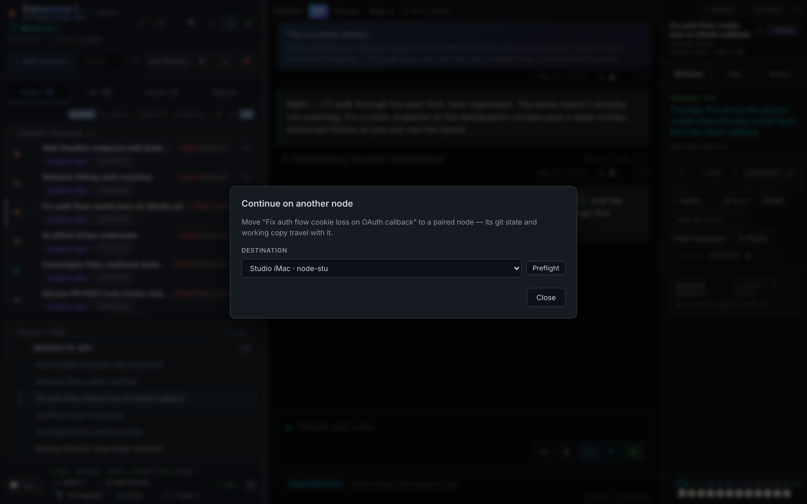

Your coding agents outgrew your terminal.
CCC puts every session, every engine, however you launched it, on one local board, and tells you which one needs you. Start the next while Claude builds the first.

The moment CCC is built for.
Mid-afternoon, five terminals open. One agent finished an hour ago and nobody noticed. One is silently waiting on a question. One is about to run out of context mid-refactor. The bottleneck is no longer the model.
"Parallel agents vanish"
"The bottleneck stopped being the models. It became me."
"Used to find 8 orphaned sessions I'd forgotten about."
If you have felt this, the rest of this page is for you.
Six problems that arrive in order.
The list grows the same way for everyone. First you cannot see every session. Then you cannot tell which one needs you. Then the flat list itself stops making sense. CCC answers them in that order, and each answer is a real capture from seeded demo data below.
Nine terminals, five engines, one board.
Every coding-agent session on your machine, on one local board, however you launched it.
- Resume a session by hand and it still appears. CCC reads each engine's on-disk state as truth, so it sees sessions it never spawned.
- One board for five engines. Claude Code is first-class; Codex, Cursor, Antigravity, and Kilo Code spawn and ingest with documented gaps.
- Close the dashboard and sessions keep running. Reopen tomorrow and everything reattaches.
- Forgotten work resurfaces. Dormant and archived sessions stay in the inventory with time-gap markers, so nothing is silently lost.
Every way CCC helps here
| Nine terminal tabs, no idea which session is which. | One local board listing every coding-agent session on the machine. |
| You resume a session by hand and your dashboard goes blind. | CCC reads each engine's on-disk state as truth; hand-launched and hand-resumed sessions appear automatically. |
| Old sessions pile up invisibly; you rediscover forgotten work weeks later. | Full inventory including dormant and archived sessions, with time-gap markers. |
| Work split across Claude Code, Codex, Cursor, Antigravity, and Kilo Code. | One board across engines. Claude Code is first-class; the other four spawn and ingest with documented gaps. |
| Closing the dashboard feels dangerous, so a tab stays open forever. | Sessions run independently; close the board, reopen tomorrow, everything reattaches. |

An agent asked you a question 40 minutes ago.
Questions waiting, context running out, limits approaching. Surfaced, not discovered.
- An agent asked and nobody saw. The needs-attention lane flags sessions ending on a real question, including plain-prose ones, with desktop notifications on macOS.
- A context window fills silently. A per-session meter warns at danger levels before it costs you a session, with one click through to compact.
- Rate limits sneak up. Usage windows for Claude plans and Codex limits project your pace so you budget the day.
- Every session runs the same model. The model advisor scores reasoning load and suggests an up- or downgrade.
Every way CCC helps here
| An agent asked "want me to proceed?" 40 minutes ago and you never saw it. | Attention detection flags sessions ending on a real question, including plain-prose ones, plus desktop notifications on macOS. |
| A session dies mid-task because its context window silently filled. | Per-session context meter with warning and danger levels; click through to compact. |
| No idea how close you are to your plan's rate limits. | Usage windows for Claude plans and Codex limits, with pace projections. |
| Every session runs the same model whether the task needs it or not. | Model advisor scores transcript reasoning load and suggests up- or downgrades. |
| You cannot say what your agent fleet actually produced this week. | Throughput view: token-weighted output over time, per engine, week by week. |

Thirty sessions is not a list problem.
Pin strategy, nest execution, arrange the whole operation on a canvas.
- Thirty rows in a flat list mean nothing. Kanban states, a project tree, and a Flow canvas give the operation a shape.
- Strategy sinks under execution. Pin strategy sessions to the top and spawned sub-sessions nest beneath them.
- Comparing two transcripts is window Tetris. Split pane puts two conversations side by side, each with its own input bar.
- "What did I decide last week?" Search across all session history from the sidebar returns it in seconds.
Every way CCC helps here
| Strategy sessions sink under a pile of execution sessions. | Pin sessions to the top; spawned sub-sessions nest underneath them. |
| Thirty rows in a flat list mean nothing. | Kanban states (Working, Review, In Testing, Verified, Archived) with drag-and-drop and multi-select. |
| Sessions belong to projects and features, not just columns. | Project tree: group sessions under nestable named objects. |
| You want the whole operation laid out spatially, like a whiteboard. | Flow canvas: drag repos, sessions, group chats, and objects on an infinite zoomable board with edges. |
| Comparing two transcripts means window Tetris. | Split pane: two conversations side by side, each with its own input bar. |
| "What did I decide about this last week?" takes minutes of grep. | Search across all session history from the sidebar. |
| Auto-generated session titles are useless slugs. | One-click AI-regenerated titles. |

Steer every agent from one composer.
Type into any session. Let agents talk in group chats. No orchestrator to write.
- A dormant session needs one more instruction. Type into any session from the browser and dormant ones auto-resume to receive it.
- You want agents to divide work. Group chats let multiple sessions share a thread and auto-ping each other to respond in turn.
- Headless spawning loses the follow-up. Dashboard-spawned headless sessions keep their input open, so fire-and-forget becomes fire-and-steer.
- Retyping the same kickoff prompt. A template gallery makes consistent spawns one click.
Every way CCC helps here
| A dormant session needs one more instruction; reopening a terminal is a chore. | Type into any session from the browser; dormant ones auto-resume to receive it. |
| You want agents to discuss and divide work, without writing an orchestrator. | Group chats: multiple sessions share a chat and are auto-pinged to respond in turn. |
| One agent needs another agent's answer right now. | Sessions can ask a sibling synchronously over a local API and get the reply back. |
| Headless spawning means losing the ability to follow up. | Dashboard-spawned headless sessions keep input open; keep typing at them from the browser. |
| You retype the same kickoff prompt for every new session. | Template gallery for reusable spawn prompts. |

Tickets in. Verified closures out.
Queues that drain, issues that close verified, deploys that fix themselves.
- Drop tickets in a queue overnight. A bound worker claims, fixes, verifies, and closes them while you sleep.
- A worker gets stuck and nothing notices. A queue-health watcher judges stuck queues from ground truth and nudges workers automatically.
- A GitHub issue should become a session in one click. It does, and verify closes the issue with a commit-SHA comment.
- Production breaks while you sleep. Optional Vercel watch spawns a fix session on a failed deploy. Opt-in, requires the Vercel CLI.
Every way CCC helps here
| You want to drop tickets in a queue and have agents drain it overnight. | Work queue with claim, fix, verify, close lifecycle and bound agent workers. |
| A worker got stuck an hour ago and nothing noticed. | Queue-health watcher flags stuck queues from ground truth and nudges workers automatically. |
| Filing a bug from your running app takes ten steps. | Annotate mode: click an element in your app, type a note, it becomes a queue ticket. |
| A GitHub issue should become a working session with one click. | Issue board: one click spawns a session on the issue; verify closes it with a commit-SHA comment. Requires the gh CLI. |
| Parallel agents on one repo clobber each other's working tree. | One-click fresh git worktrees per task, with optional repo init scripts. |
| Production breaks while you sleep. | Optional Vercel watch: new failed prod deploys auto-spawn a fix session, deduped by commit. Opt-in, requires the Vercel CLI. |

The fleet stays home. You don't have to.
Phone in hand or a different machine entirely. The fleet does not care where you are.
- Phone in hand. A responsive mobile UI shows the whole fleet and lets you steer any session from your network.
- A different machine entirely. Continue-on-another-machine hands a session off atomically, repo state and transcript included, to a paired peer.
- The fleet does not care where you are. Check it from the couch, pick it up at another desk.
Every way CCC helps here
| You stepped away; the fleet kept going; your phone shows nothing. | Responsive mobile UI: monitor and steer sessions from a phone on your network. |
| The session you need lives on the other machine. | Continue-on-another-machine: atomic handoff of a session, repo state and transcript included, to a paired peer. |


How CCC differs from the other tools.
Tools in this category make different bets. Here is where each one wins and where each one loses, as of July 2026. We listed where CCC loses too.
| CCC v5.8 | claude-squad | Conductor | Sculptor | |
|---|---|---|---|---|
| Sees terminal sessions you didn't spawn | ✓ | no | no | no |
| Multi-engine dashboard | ✓ 5 engines, Claude Code first-class | Claude + Codex | Claude + Codex | Claude + Codex |
| Antigravity app-session input (local RPC) | ✓ | no | no | no |
| Row pinning + sub-session hierarchy | ✓ | no | no | no |
| GitHub issue to session in one click | ✓ | no | no | no |
| Local. Survives dashboard close. | ✓ | ✓ | ✓ | ✓ |
| Readable source, no build step | ✓ stdlib Python, no-build UI | Go | closed | docs only |
| Native-ish install path | ✓ DMG + Homebrew | CLI | ✓ | ✓ |
| Windows / Linux | macOS first-class, Linux headless, native Windows install (v5.6) | ✓ | macOS | macOS + Linux |
Install in 60 seconds.
macOS, Linux, or Windows, Python 3, and Claude Code. Add Codex, Cursor, Antigravity, Kilo Code, or GitHub CLI and the matching surfaces light up.
# one-line install
# macOS / Linux: downloads, installs, opens the dashboard curl -fsSL https://raw.githubusercontent.com/amirfish1/claude-command-center/main/scripts/install.sh | CCC_FROM=landing bash # Windows PowerShell irm https://raw.githubusercontent.com/amirfish1/claude-command-center/main/scripts/install.ps1 | iex # macOS / Linux: launch later ccc start open http://localhost:8090 # Windows PowerShell: launch later .\run.ps1
Installs two hooks into ~/.claude/settings.json so every Claude Code session writes the sidecar state CCC reads. Idempotent.
# Homebrew or Mac app
# drag-and-drop install (recommended if you avoid the terminal) Download CCC.dmg ↓ # or via Homebrew brew tap amirfish1/ccc brew install ccc
DMG is notarized and signed by Apple. Drag, drop, double-click. Homebrew installs the ccc command and can run CCC as a background service.
Most orchestrators want to own you.
Other tools want to own execution. You launch agents through their dashboard, and in return you get a card on a kanban. That's fine until you open a terminal.
The moment you resume a session by hand, you're outside the tool's universe. The dashboard can't see it. The work you just did doesn't show up against the issue, in the review queue, or anywhere.
CCC goes the other way. Each engine's on-disk state is the source of truth. If Claude Code, Codex, Cursor, Antigravity, or Kilo Code is running anywhere on your machine, it shows up here. Close the dashboard. Sessions keep running. Reopen tomorrow. Everything still there.
- ArchitectureA stdlib-only Python server and a no-build vanilla-JS browser UI. No pip installs, no bundler, no framework. Nothing hidden, nothing to audit but the source in front of you.
- StateHuman-readable JSON sidecars under
~/.claude/command-center/. Rewriteable by hand. - WorkersNo required background jobs. The optional queue watcher only runs when you use the work queue.
- TelemetryPublic contract, bounded schemas, and no transcripts. The daily usage ping is opt-in; anonymous boot and site-click counters are documented and auditable.
- ScopeLocal dev tool. macOS desktop, headless Linux, native Windows install. No hosted multi-user control plane. Expose it only on trusted loopback or a private network.